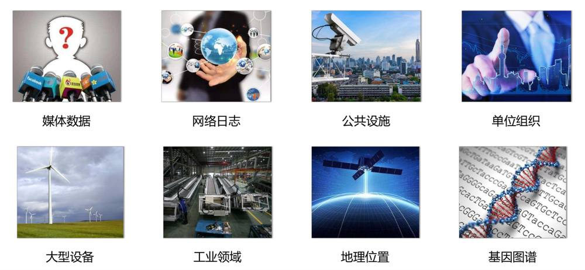
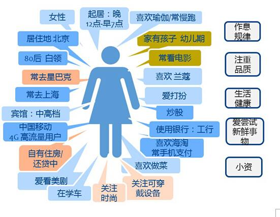
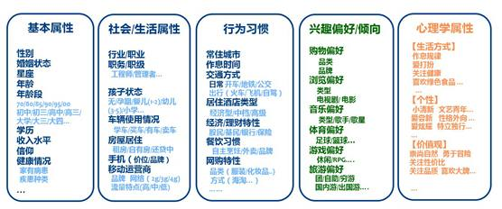
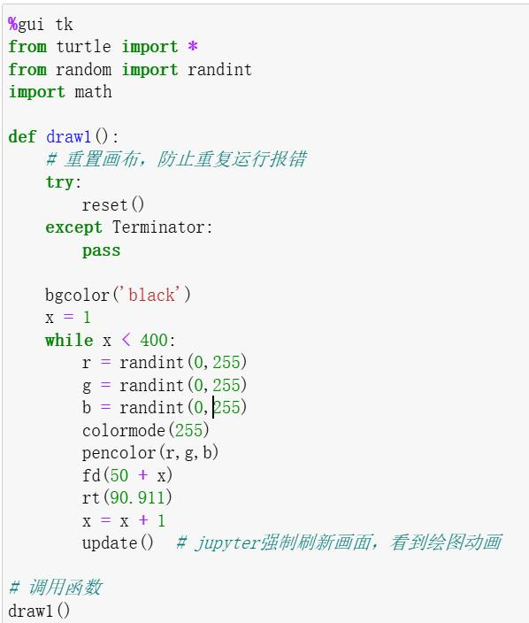

第 1 页 · 第1章 Python基础知识宁悦 管理学院
第1章 Python基础知识宁悦 管理学院
第 2 页 · 考核标准
考核标准
1.考试要求
期末考试采取大作业形式，考核内容覆盖面广，难易程度应适中，重点考核应用所学知识解决实际问题的能力。
2.成绩构成
最终成绩由两部分组成，即平时成绩和期末成绩。平时成绩包括课堂表现、课后作业、实训、自主学习，课堂表现包括：考勤、课堂作业完成情况，课堂表现占10%，课后作业占10%；实训占10%；自主学习以大作业的形式完成，占10%；期末成绩为期末大作业，占比为60%。
第 3 页 · 学习Python的必要性
学习Python的必要性
随着人工智能时代的来临，Python开始崭露头角，选择学习Python的人与日俱增。Python的强大以及广泛应用已成为人们的共识，目前Python已经广受数学科学、AI和脚本语言开发人员的欢迎。在过去5年，Python语言的流行性也不断增加。在最近的一项开发语言流行性调研中，Python排名位居前列。因此，选择学习Python开发语言是非常有必要的。
第 4 页 · 大数据的发展促进Python的应用
大数据的发展促进Python的应用
为什么会有大数据

伴随着云计算技术和移动互联网技术的应用和发展，数据呈现出爆炸式的增长。
第 5 页 · 幻灯片
（本页无可提取文字，含图形/图片内容）
第 6 页 · Python业务场景应用展示
Python业务场景应用展示
商品推荐（广告）
个性化服务（千人千面APP）
人群标签，精准营销
店铺标签，精准匹配

谁最了解你？

大数据分析的应用场景
第 7 页 · Python为什么能成为网红
Python为什么能成为网红
1
2
3
人工智能
通过大数据分析、机器学习、深度学习技术对金融、交通、医疗等行业都提供了大力的支持。
庞大的“代码库”
背后有最最庞大的“代码库”，可以适用于各个场景
适用场景广泛
抢火车票，便捷的数据分析，开发网站，开发手机游戏（阴阳师）、微信、支付宝小程序等
除了不会生孩子，剩下啥都会
第 8 页 · 编程语言的发展历程
编程语言的发展历程
第 9 页 · Python语言有多简洁
Python语言有多简洁
print("Hello World")
public class Hello {
public static void main(String[] args){
System.out.println("Hello World");
}
}
#include <stdio.h>
int main() {
printf("Hello World\n");
return 0;
}
C
JAVA
Python
第 10 页 · Python趣味代码
Python趣味代码

第 11 页 · 课程性质
课程性质
Python业务场景应用编程采用理论教学与上机实践相结合的方法，主要介绍Python程序设计的相关知识，具体包括Python开发环境及工具、基础语法、函数与模块、面向对象编程、文件操作和数据分析与可视化等内容。
Python是一门开源的高级动态编程语言，支持命令式编程、函数式编程、面向对象程序设计，语法简洁清晰，并且拥有大量功能丰富而强大的标准库和扩展库。在教学过程中，一方面，引入我国技术创新思维，结合专业自身技术优势，激发大家对本专业的热爱及民族自豪感；另一方面，引导大家、能够正确、熟练地使用Python语言解决实际应用中的问题，为大家今后从事系统开发和数据分析类相关工作奠定坚实基础。